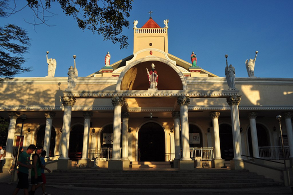
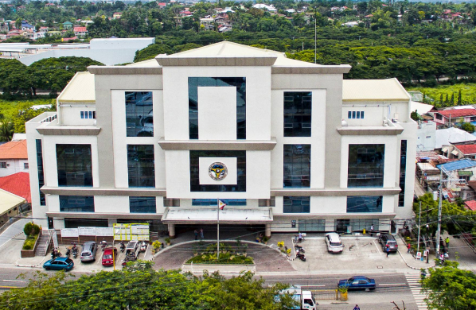

Consolacion may be a small town, but its historical landmarks hold significant stories that reflect its vibrant past and cultural identity. From enduring colonial influences to treasured community spaces, these sites connect us to the rich heritage of our municipality. Discover the stories behind these cherished places and the history they represent!
Established in 1872, this parish is dedicated to San Narciso, chosen as the patron saint in honor of the wife of the Spanish Governor who approved Consolacion’s establishment as a municipality. The original structure was made of nipa and bamboo but has undergone reconstruction and modernization. It remains a center of religious activity and cultural heritage in the municipality.
While primarily known as a modern infrastructure project, the Cansaga Bridge is historically significant as a key connection between Consolacion and Mandaue, improving transportation and commerce. This bridge sits near the Cansaga Bay and serves as a gateway for the town, symbolizing progress and connectivity. Its proximity to the historical areas of Consolacion ties it to the town's narrative of development.
(Now the Municipal Hall)
This site marks the location of the first municipal building of Consolacion, built in 1871 out of nipa and bamboo. The structure symbolized the town's independence after being recognized as a municipality. Although the original building was destroyed in 1888 and replaced by modern iterations, the location remains a significant part of Consolacion’s heritage. The current Municipal Hall, standing nearby, continues to serve as the town’s center of governance.